about molly
hello!
the longer version: who i am, what i make, and where i've been lately.
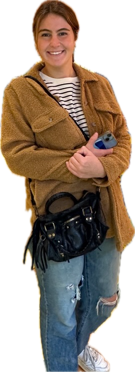
my story
a little bit of everything
i'm molly: a designer, painter, stitcher and tinkerer, and a brand-new grad (class of 2026!). i'm happiest when i'm making something, whether that's a website, a needlepoint canvas or a piece of jewelry.
i also love a good adventure. i've walked the camino de santiago, gone on safari, and met a few too many monkeys. every trip comes home with me as color, ideas and a new obsession.
i believe tech and creativity belong together, and i love helping people find the spot where they overlap.
life lately
a little scrapbook of the places, people (and animals) that keep me inspired.
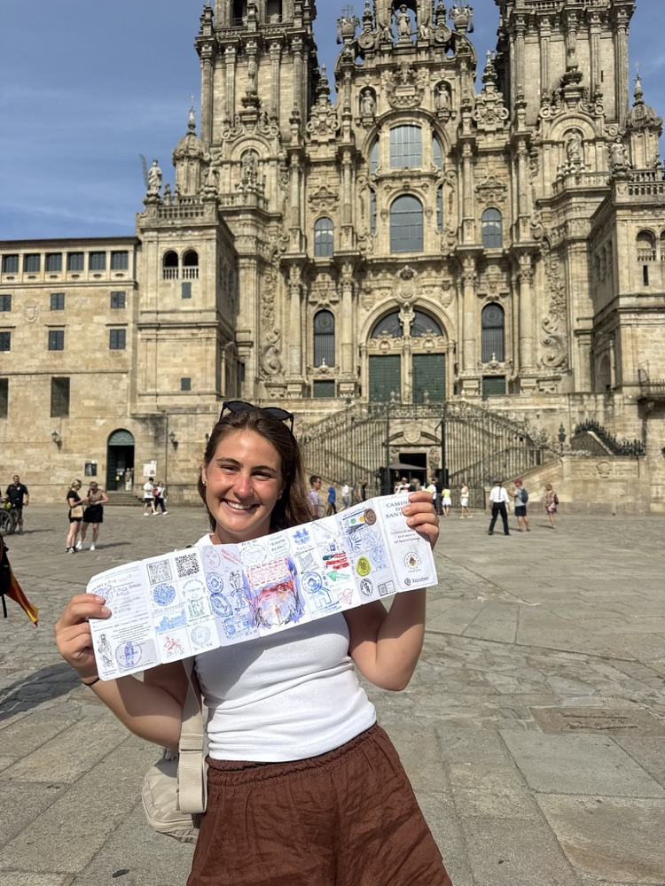
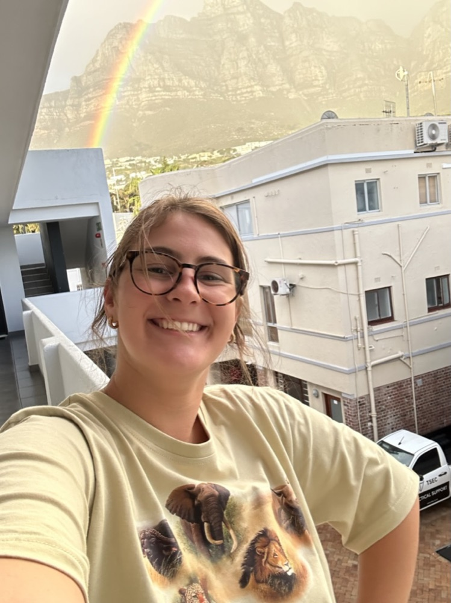
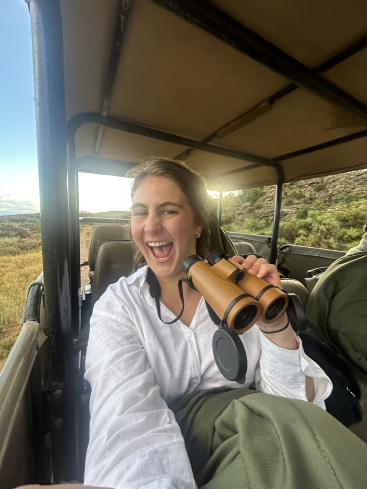
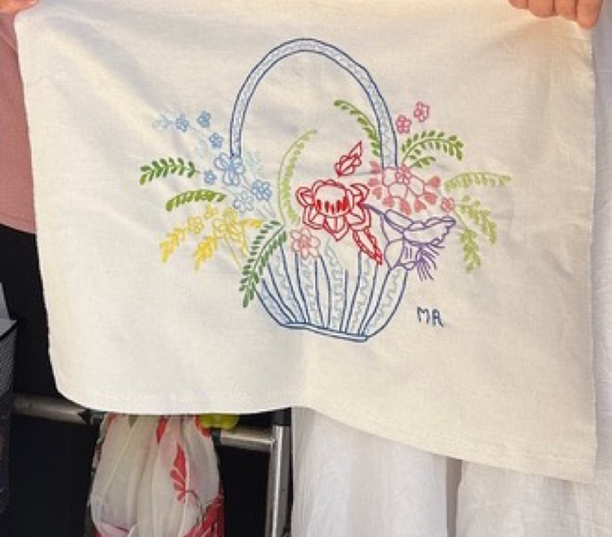

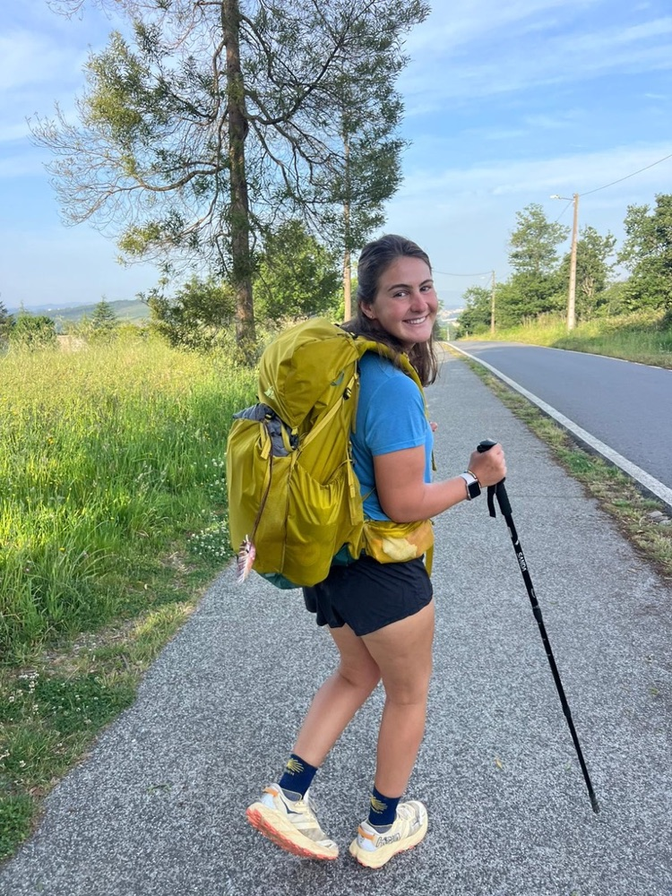
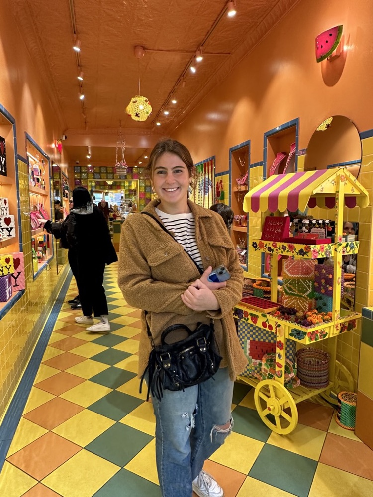
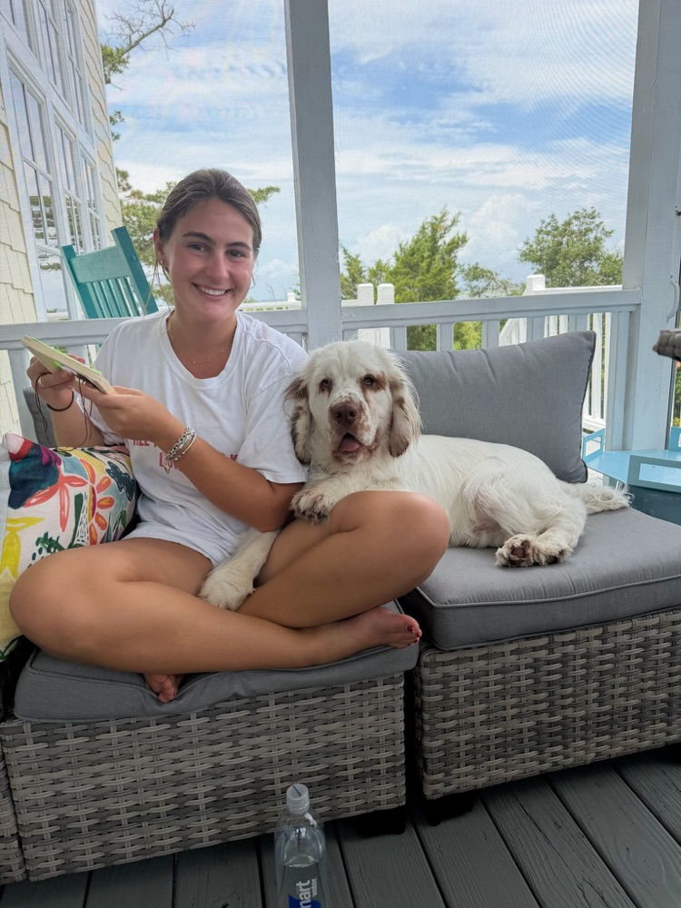
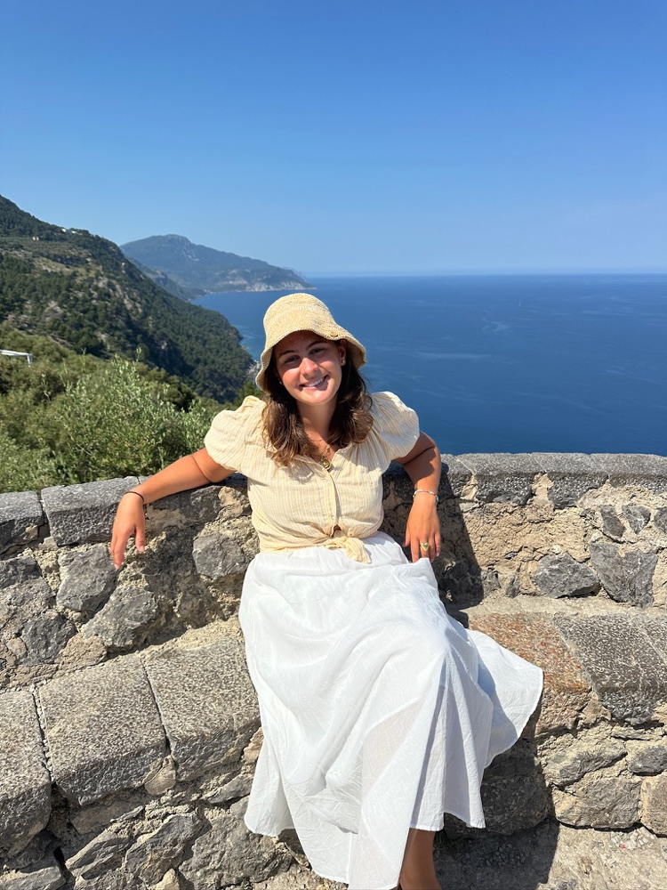
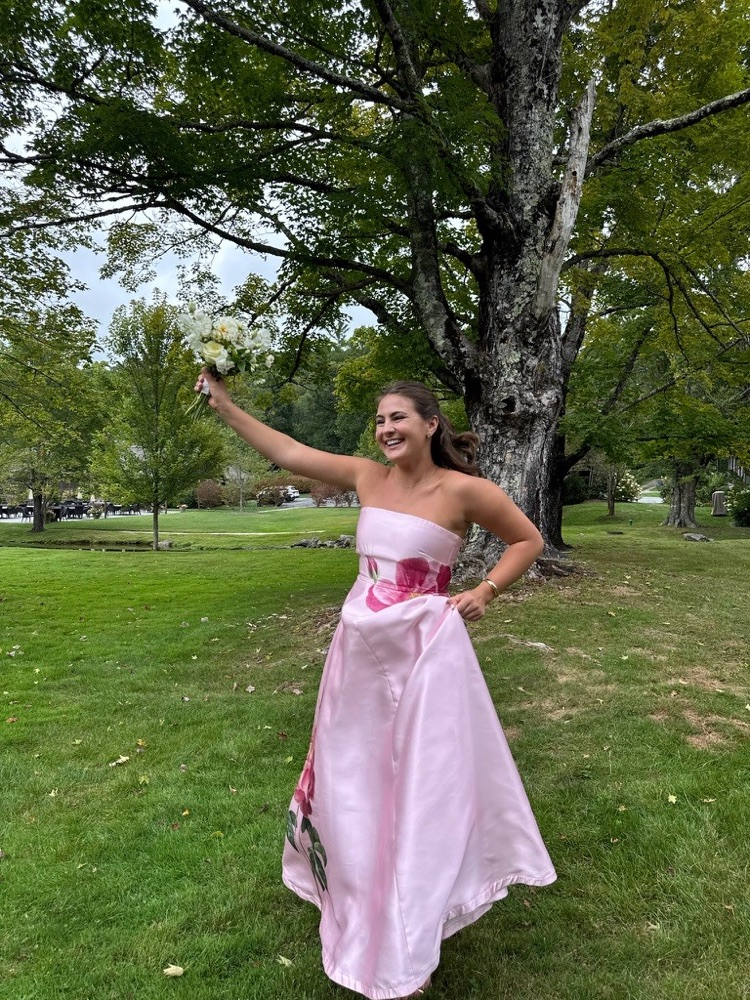
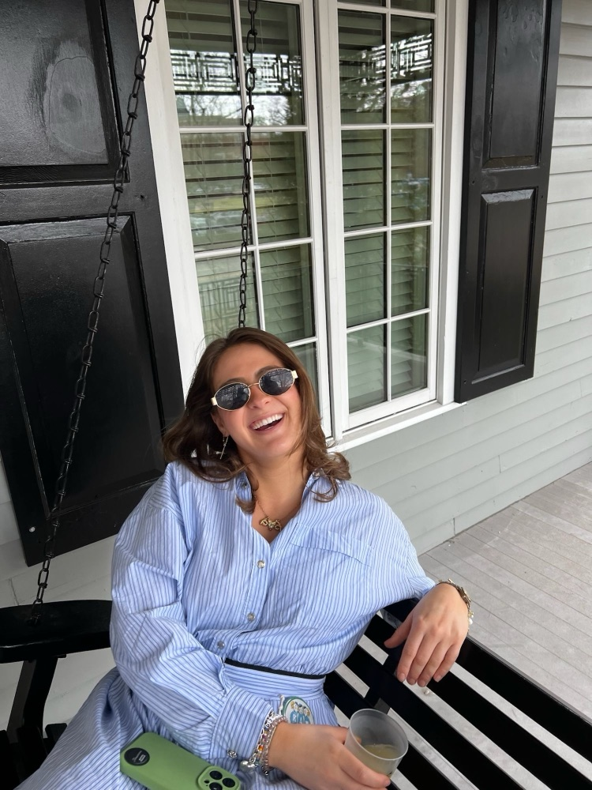
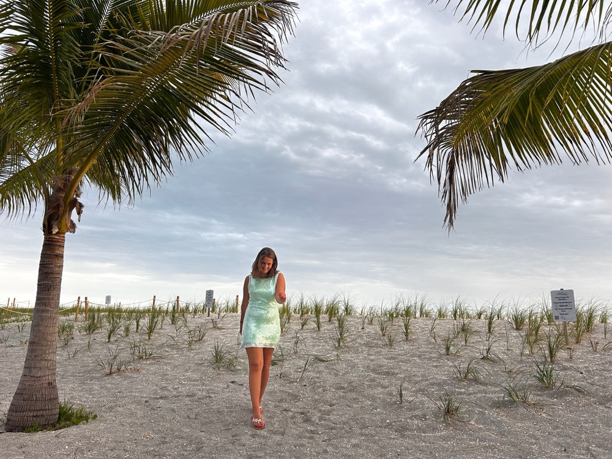
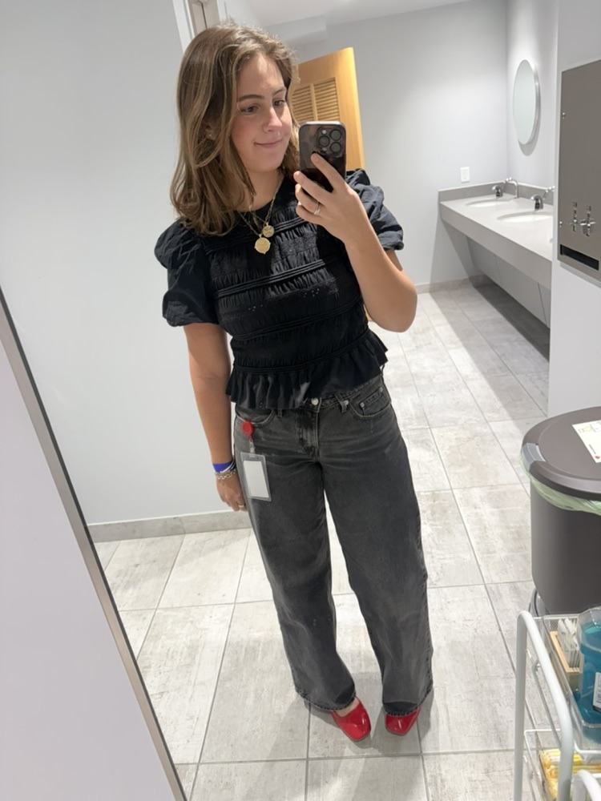
a few fun facts
the important stuff, obviously.
i walked the camino de santiago and collected every stamp to prove it.
on safari, i'm the one yelling "look!!" with the binoculars.
my needlepoint goes everywhere with me, ideally with a dog in my lap.
i have never once walked past a colorful shop without going in.